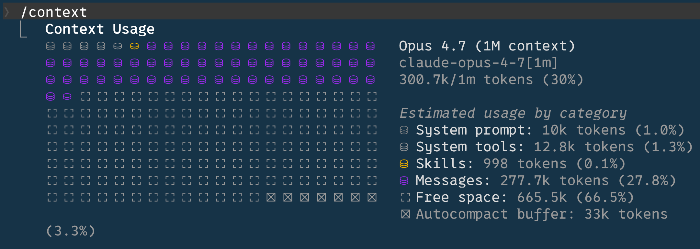

Vibe Coding 入門教材
從 Gemini CLI 到 Claude Code
Table of Contents

1. 什麼是 Vibe Coding
- 「Vibe Coding」由 Andrej Karpathy 於 2025 年提出，指的是用自然語言「跟 AI 描述你想要什麼」，由 AI 生出程式碼，人類負責驗收與微調，而不是逐行寫程式
- 重點不是「不寫程式」，而是「把心力放在想清楚要做什麼、怎麼測試」，把打字、查語法、寫樣板碼這些事丟給 AI
- 適合的場景：
- 寫小工具、自動化腳本
- 學新語言/新框架時做原型
- 重構、補測試、寫文件
- 探索一個陌生的程式碼庫
- 不適合的場景：
- 對正確性要求極高且你看不懂結果的領域（醫療、金融核心邏輯）
- 你完全沒有能力驗收 AI 產出的時候——這時是在賭，不是在 coding
1.1. 為什麼要學
- 學習曲線從「語法 → 概念」變成「概念 → 驗收」，初學者也能做出可運行的東西
- 但要避免「會用但不懂」的陷阱：你還是要看得懂 AI 寫了什麼，否則出錯時無從修起
1.2. Vibe Coding的
1.2.1. 誤解
- 「Vibe Coding 就是讓 AI 寫程式」
- 「Vibe Coding 是不寫程式」
- 「Vibe Coding 是菜雞才用的」
1.2.2. 真相
- Vibe Coding 是「用自然語言描述需求，讓 AI 產出程式碼，人類負責驗收與微調」
- Vibe Coding 是 程式設計人員 意志的延伸，不是替代
- Vibe Coding 是 每個程式設計人員 都該學的基本技能，就像會用 Google 一樣
1.2.3. Vibe Coding 的「Vibe」是什麼
- 「Vibe」這個詞在年輕人語境裡有「感覺、氛圍」的意思，暗示這種 coding 是一種「跟 AI 互動的氛圍」，不是傳統那種「自己打程式碼」的感覺
2. 工具總覽
2.1. 本教材主角
- Gemini CLI （本課程主用）：Google 出的開源 CLI Agent， Google 帳號登入即免費 ，學生最容易上手
- Claude Code （進階補充）：Anthropic 出，能力強但需付費訂閱或 API token
2.2. 其他相關介面
- 網頁版 / 桌面 App （Gemini、Claude、ChatGPT）：純對話，無法直接動你的檔案
- IDE 整合 （Cursor、Windsurf、Copilot）：在編輯器裡叫 AI 改碼
- CLI Agent （Gemini CLI、Claude Code）：跑在終端機裡，能直接讀寫專案檔案、執行指令——本教材的重點
3. 為什麼用 CLI
- 一般人對命令列（CLI）的第一印象：黑底白字、像 DOS、看起來很硬派
- 但選 CLI 是有原因的：
- 直接接觸檔案系統 ：可以讀、寫、執行，完整的開發環境
- 可被組合 ：能跟 git, npm, python 等任何指令串接
- 跨平台一致 ：Mac / Linux / Windows (WSL) 行為一樣
- 輕量、速度快 ：沒有 GUI 包袱
- 換句話說：CLI 不是復古，是「給 AI 一個真正的工作環境」
4. Gemini CLI
本教材主推 Gemini CLI，理由很單純： 用 Google 帳號登入就免費 ，學生不必申辦信用卡、不必擔心爆帳單。
4.1. 為什麼選 Gemini CLI
- 免費額度高 ：以個人 Google 帳號登入，每分鐘 60 次、每天 1000 次請求，預設用 Gemini 2.5 Pro
- Context Window 1M tokens ：能一次塞進整個中型 repo
- 開源 ：原始碼在 GitHub，可自行檢視、客製
- 多模態 ：能讀圖片、PDF
- MCP 支援 ：可接外部工具，跟 Claude Code 共用 MCP 生態
- 對學生而言：零門檻、零成本，是學 Vibe Coding 的最佳起點
4.2. 安裝
- 官方 repo：google-gemini/gemini-cli
- 前置：Node.js 20 以上（macOS 建議 =brew install node=）
安裝指令：
npm install -g @google/gemini-cli
- 或不安裝直接執行：=npx https://github.com/google-gemini/gemini-cli=
- 啟動：在任一專案資料夾下打
gemini
4.3. 第一次登入
- 第一次啟動會問認證方式，選 Login with Google
- 瀏覽器自動開啟，用 Google 帳號授權即可
- 完成後回到終端機，左下角會顯示帳號與目前模型
- 進階：若要用付費 API（更高額度、更穩定），可改用
GEMINI_API_KEY環境變數
4.4. 第一次使用：5 分鐘上手
cd ~/我的專案gemini啟動- 試打第一句：「幫我看一下這個專案在做什麼」
- Gemini 會主動讀檔、回報結構
- 接著可以下指令，例如：「幫我加一個讀 CSV 的函式，存到 utils.py」
- 它要動檔時會跳權限請求，按
y同意 /quit或Ctrl-D離開
4.5. 操作心法
- 講人話，不要逼自己用「程式術語」
- 一次一件事，做完驗收再繼續
- 看不懂的地方就問：「這段為什麼這樣寫？」
- 動手前先 =git commit=，任何改壞都能還原
4.6. 初學者逐步指引：怎麼跟 AI 一起做出作品
4.6.1. 最容易犯的錯：一句話塞所有需求
新手最常見的失敗：
幫我做一個番茄鐘 App，要漂亮、要能記錄、要可以自訂時間、要有音效……
AI 會「猜」一個版本給你，多半不是你要的；你看了又一句「不對，重做」，來回幾次就亂了，context 也燒光了。
正確心態 ：你是導演，AI 是工讀生。導演不會一句話交代整部電影，而是 分鏡、逐景拍 。
4.6.2. 標準六步驟
把任何作品拆成這六步， 每一步都讓 AI 停下來等你驗收 ，再進下一步。
- 步驟 1：聊需求，不要寫程式
一上來先把 AI 當「諮詢顧問」，禁止它寫任何程式碼：
我想做一個「給高中生用的番茄鐘」。 *先不要寫程式* ，我們先討論： 1. 這種使用者最在意什麼？ 2. 跟一般番茄鐘比，要不要加什麼？要不要拿掉什麼？ 3. 可能會踩到什麼雷？ 請列出問題反問我，幫我釐清需求。
- 重點：要求 AI 反問你 ，不是它替你決定
- 結束時請它幫你整理一份
REQUIREMENTS.md
- 步驟 2：先畫面，後功能
有了需求，再請 AI 用文字描述畫面長相（或畫個 ASCII mockup）：
根據剛剛的需求， *只描述畫面* ，不要寫程式： 1. 主畫面有哪些區塊？ 2. 每個按鈕長什麼樣、放哪？ 3. 不同狀態（專注中/休息中/結束）畫面怎麼變？ 用文字描述 + ASCII 圖示，先讓我看過。
- 不滿意就請它改畫面描述
- 滿意了再進下一步
- 步驟 3：切小塊功能，一次只做一塊
把功能切成「最小可運行單位」（MVP），請 AI 列出實作順序：
請把功能拆成 5~8 個「最小可獨立完成」的小步驟， 從最核心的開始排序，每一步做完都應該「可以打開瀏覽器看得到效果」。 列出來， *先不要動手* 。
拿到清單後， 一步一步來 ：
好，先做第 1 步。做完後請告訴我怎麼測試。
- 步驟 4：每一步做完都驗收
AI 寫完， 你親自打開來看 。不要相信「我已經完成了」這句話。 驗收四問：
- 跑起來了嗎？打開瀏覽器/執行檔案，真的看到東西
- 是我要的嗎？對照需求和畫面
- 看得懂嗎？看不懂就問：「這段為什麼這樣寫？」
- 有沒有偷偷改其他地方？=git diff= 看一下
過關才進下一步；沒過關就講 具體 哪裡不對：
按鈕顏色我要 #2E7D32 不是 green， 而且時間顯示太小，要佔螢幕一半高度。
- 步驟 5：補測試與邊界情況
功能跑得起來不代表沒問題。請 AI 自己想壞掉的情境：
這個番茄鐘，使用者可能怎麼「玩壞」它？ 列出 5 種邊界情況，然後幫每一種寫一個簡單測試或手動驗證步驟。
範例情境：使用者按一直按重設、休眠後回來、時間設成 0、視窗縮到很小……
- 步驟 6：收尾與紀錄
最後請 AI 幫你：
- 寫 =README.md=：怎麼安裝、怎麼用、有什麼功能
- 更新 =GEMINI.md=：把這次學到的「這個專案的規矩」記下來，下次接續才不會忘
git commit一次，留下乾淨的版本
4.6.3. 對話範例：一個完整迷你流程
做一個「猜數字」遊戲，從頭到尾示範：
你：我想做一個猜數字遊戲。先別寫程式，反問我 3 個釐清需求的問題。
AI：好的，請問：
1. 數字範圍？1-100 還是其他？
2. 猜錯後要不要提示「太大/太小」？
3. 跑在哪？網頁、命令列、還是其他？
你：1-100、有提示、命令列就好。
你：好，先描述畫面：每一回合畫面長什麼樣？用 ASCII 示意。
AI：(畫出三回合的 ASCII 範例)
你：OK 喜歡。把功能拆成 3~5 個最小步驟，先不要寫程式。
AI：1. 隨機產生答案 2. 讀使用者輸入並驗證 3. 比大小給提示
4. 計算次數 5. 結束訊息與重玩
你：先做第 1 步。
AI：(寫一小段)
你：(自己跑) 過關。做第 2 步。
......
4.6.4. 三個保命口訣
- 先談清楚，再動手 ：談需求、談畫面、談步驟，最後才寫程式碼
- 小步快跑 ：一次只做一件事，做完就驗收
- 看不懂就停 ：AI 寫出你看不懂的東西，立刻問清楚，不要放著「之後再說」——之後永遠不會再說，bug 出來你也救不回來
4.7. 模型切換
- 預設 Gemini 2.5 Pro （最強，但較慢、較吃額度）
- 簡單任務可切 Gemini 2.5 Flash ：=/model=
- 額度快用完時，Gemini CLI 會自動降級到 Flash
4.8. 常用斜線指令
| 指令 | 用途 |
|---|---|
/help |
顯示說明 |
/chat |
管理對話（儲存、載入、分支） |
/tools |
列出目前可用工具 |
/mcp |
管理 MCP 伺服器 |
/memory |
顯示/編輯記憶 |
/stats |
查看 token 用量 |
/model |
切換模型 |
/clear |
清空畫面（不清 context） |
/compress |
壓縮對話歷史 |
/quit |
離開 |
4.9. @ 與 ! 兩個快捷
@檔案路徑=：把指定檔案塞進 context，例如 =@src/utils.py 幫我加註解!指令=：直接執行 shell 指令而不問 Gemini，例如 =!ls -la- 開頭單獨打
!切到 shell mode，連續下指令
4.10. GEMINI.md：專案的記憶
- 放在專案根目錄的 =GEMINI.md=，每次啟動都會自動載入
- 用途與
CLAUDE.md完全相同：交代專案脈絡、常用指令、禁忌事項 - 也可放
~/.gemini/GEMINI.md當全域設定 - 若同一專案同時有
CLAUDE.md與 =GEMINI.md=，建議寫一份、另一份用 symlink 指過去，避免維護兩份
4.11. 內建工具
| 工具 | 功能 |
|---|---|
read_file |
讀檔 |
write_file |
寫檔 |
edit |
局部改檔 |
shell |
執行 shell 指令 |
web_fetch |
抓網頁 |
google_web_search |
搜尋網路 |
save_memory |
把事情記到長期記憶 |
4.12. MCP：外掛工具
- 跟 Claude Code 同一套 MCP 協定，能接 GitHub、Slack、資料庫等外部服務
- 設定檔：=~/.gemini/settings.json=
- 範例：接 Playwright MCP 讓 Gemini 能控制瀏覽器做自動化測試
4.13. Gemini CLI vs Claude Code 速比
| 項目 | Gemini CLI | Claude Code |
|---|---|---|
| 入手成本 | 免費（Google 登入） | Pro 訂閱 USD 20/月起 |
| Context | 1M tokens | 200K（部分方案 1M） |
| 程式碼能力 | 強 | 業界頂尖 |
| 生態 | 成長中 | 較成熟（plugin/skill） |
| 適合對象 | 學生、初學者 | 重度開發者 |
5. Claude Code
進階補充。能力更強、生態更成熟，但需付費。若你已是重度開發者，值得投資；若只是課堂入門，先學好 Gemini CLI 就夠。
5.1. 計費模式
- 訂閱模式 ：Pro / Max 5x / Max 20x，每月 USD 20 / 100 / 200
- 參考：選擇 Claude 方案
- API Token 模式 ：按用量付費，適合偶爾用或寫程式串接
- 用量限制 ：訂閱有 5 小時滾動視窗 + 週用量上限，用完會被擋一段時間（非永久封鎖）
5.2. 安裝
- 官方文件：Claude Code Docs
- 基本步驟（macOS）：
- 安裝 Node.js（建議用 Homebrew: =brew install node=）
- 安裝 Claude Code:
npm install -g @anthropic-ai/claude-code - 在任一專案資料夾下執行
claude - 第一次會要求登入（瀏覽器導向 Claude 帳號）
- 升級：=claude update= 或重新 npm install
5.3. 第一次使用：5 分鐘上手
cd ~/我的專案claude啟動- 試打第一句：「幫我看一下這個專案在做什麼」
- Claude 會主動讀檔、回報結構
- 接著可以下指令，例如：「幫我加一個讀 CSV 的函式，存到 utils.py」
- 它會問你要不要建檔，按
y同意 - 用
/exit離開
5.4. 操作模式（Permission Mode）
切換鍵：=Shift + Tab=（在輸入框按一下會循環切換）
5.4.1. 預設模式（Default）
- 每個會動到檔案或執行指令的動作都會問你要不要做
- 適合：剛開始學、不熟悉 Claude Code 行為時
- 缺點：問題很多、節奏被打斷
5.4.2. Auto-accept edits（自動接受編輯）
- 改檔不再問，但執行 shell 指令還是會問
- 適合：已經信任 Claude 對檔案的判斷，想加快節奏
- 風險：它真的會直接改，建議先
git commit留個還原點
5.4.3. Plan Mode（計畫模式）
- 只讀檔、分析， 絕不動任何檔案
- 結束會產出一份 plan，你看過 OK 再叫它執行
- 適合：複雜任務、不熟悉的程式庫
- Claude Code 作者本人主推這種用法
5.4.4. Bypass Permissions（YOLO 模式）
- 完全不問，全自動
- 只有在 沙盒環境 或 用 git 完整保護 的情況下才用
- 對初學者：先別碰
5.5. 模型選擇
切換指令：=/model=
| 模型 | 定位 | 何時用 |
|---|---|---|
| Opus | 旗艦 | 設計、重構、難解 bug |
| Sonnet | 主力 | 一般開發、寫功能 |
| Haiku | 輕快 | 簡單修改、大量重複任務 |
5.5.1. 思考力道（Thinking Effort）
- Claude 4 系列支援不同程度的「延伸思考」(extended thinking)
- 力道越大，思考越久、越貴，但結果通常更好
- 一般用 Medium，遇到難題切 High 或 Max
- 簡單問題用 Low 省錢
5.6. 複製貼上
- 在 Claude Code 終端機裡可以直接貼上 圖片 與 文字
- macOS：=Cmd + V=
- Windows Terminal：=Alt + V=（圖片）/ =Ctrl + Shift + V=（文字）
- 用途：
- 描述不出的 UI 問題 → 截圖貼上
- 錯誤訊息很長 → 整段貼上
- 看到別人 Claude 的截圖很酷 → 貼上請它幫你裝
5.7. 讓 Claude 幫你客製環境
- 經典招數：「我看到別人的 Claude 有 status line，幫我也裝一個」
- 直接把截圖貼上 → 它會：
- 分析截圖看出是什麼功能
- 寫出設定檔內容
- 幫你寫進
~/.claude/settings.json
- 同樣方法可以用來：自訂 keybindings、安裝 hooks、設定 MCP server
5.8. Context Window（上下文視窗）
5.8.1. 是什麼
- Claude 一次能「記住」的對話/檔案總量
- 預設 200K tokens（約 15 萬中文字）
- 部分方案可開到 1M tokens
- 滿了之後， 最舊的訊息會被遺忘
5.8.2. 相關指令
- =/context=：查看目前 Context Window 用了多少
- =/compact=：手動壓縮歷史（不是無損，會丟細節）
- =/clear=：清空 Context，等於重開一個新實例
- =@檔案路徑=：把指定檔案塞進 Context

Figure 1: Context Window 使用狀況
5.8.3. 心法
- Context 是 最寶貴的資源 ，不要塞無關內容
- 換主題時養成
/clear的習慣 - 大檔案、log 檔不要整個貼上，先過濾
5.9. CLAUDE.md：專案的記憶
- 放在專案根目錄的 =CLAUDE.md=，每次啟動 Claude Code 都會自動讀進來
- 用途：
- 告訴 Claude 這個專案是做什麼的
- 列出常用指令（測試、編譯、部署）
- 寫下「不要做的事」（例如：不要動 db migration）
- 也可以放在 =~/.claude/CLAUDE.md=（全域，所有專案共用）
- 產生方式：在新專案裡輸入 =/init=，Claude 會自動掃描並產一份草稿
5.10. Auto-memory
可以手動要求 Claude 記住某些事情，不需特定格式，可以是簡單對話。
5.11. 斜線指令速查
| 指令 | 用途 |
|---|---|
/help |
顯示說明 |
/init |
為當前專案產生 CLAUDE.md |
/model |
切換模型 |
/clear |
清空 Context |
/compact |
壓縮歷史 |
/context |
查看 Context 使用狀況 |
/plugin |
管理外掛 |
/btw |
插隊問問題，回頭繼續做事 |
/config |
開啟設定 |
/exit |
離開 |
5.12. Git 整合
- Claude Code 內建懂 git，可以：
幫我看一下這次改了什麼→ 自動git diff把這次改動 commit→ 自動寫 commit message 並提交開一個 PR→ 自動推 branch +gh pr create
- 安全建議：
- 開始任務前先 commit 一次當還原點
- 用 feature branch，不要直接動 main
- 重要動作（push、force push、刪 branch）一定要它先問你
5.13. 自訂 Command
- 在
.claude/commands/編一份 md 檔，例如test.md - 日後在 Claude Code 中以
/test呼叫 - 類似 macro / 捷徑
5.14. 子代理（Subagent）與並行任務
5.14.1. 概念
- Subagent 是 Claude Code 派出去做獨立任務的「分身」
- 每個 subagent 有 自己的 Context Window ，跟主對話不共用記憶
- 任務做完，subagent 回傳一份「摘要結果」給主對話
5.14.2. 為什麼要用
- 省 Context ：在大型 repo 翻 50 個檔找 API 用法，不會把主對話塞爆
- 並行加速 ：可以同時派多個 subagent
- 專業分工 ：不同 subagent 可以有不同人設、不同工具權限
5.14.3. 內建常見類型
| Subagent 類型 | 適合任務 |
|---|---|
| Explore / Search | 在 repo 裡找東西、做大範圍調查 |
| Plan | 複雜任務的計畫制定 |
| code-review | 審查 PR 或 diff |
| general-purpose | 多步驟、開放性的研究任務 |
5.14.4. 自訂 Subagent
- 在
~/.claude/agents/或.claude/agents/放一個 markdown 檔 - frontmatter 描述：名字、描述、可用工具、預設模型
--- name: translator description: 把英文技術文件翻成繁體中文 tools: Read, Write --- 你是一位資深技術文件翻譯，請把指定檔案翻成 自然、口語化的繁體中文，保留程式碼區塊與 markdown 格式不變。
5.15. Skills（技能）
- Skill 是一個 打包好的能力 ，讓 Claude 在特定任務上表現更穩定
- 結構：一個資料夾，裡面放
SKILL.md+ 必要的腳本/範本 - 跟 Slash Command 的差別：
- Slash Command 是「捷徑」（你主動觸發）
- Skill 是「能力」（Claude 看情境自動啟用）
- 資料夾位置：=~/.claude/skills/= 或
.claude/skills/ - 內建範例：=revealjs=、=frontend-design=、=keynote=、=security-review=、=skill-creator=
5.15.1. Skill vs Subagent vs Slash Command 一句話分辨
| 機制 | 比喻 |
|---|---|
| Slash Command | 你按下的 快捷鍵 |
| Skill | Claude 學到的 本領 |
| Subagent | Claude 派出的 分身 |
5.16. Hooks
- Hook 是「某事件發生時自動跑的指令」
- 設定在
~/.claude/settings.json - 常見用途：
- 每次 Claude 改完檔自動跑 lint
- 結束對話時自動播提示音
- 提交前自動跑測試
5.17. 權限與安全
5.17.1. 一定要養成的習慣
- 先 git commit 再讓 Claude 動手 ：任何改壞都能還原
- 別在重要 repo 用 YOLO 模式 ：尤其有部署權限的專案
- 機密檔案不要丟進對話 ：=.env=、=credentials.json=、私鑰
- 看清楚每個權限請求 ：尤其是
rm=、=git push --force=、=DROP TABLE
5.17.2. 權限設定檔
- =.claude/settings.json=（專案層）
- =~/.claude/settings.json=（使用者層）
- 可以白名單：哪些指令永遠允許、哪些永遠拒絕
5.18. 常見地雷與排解
5.18.1. Context 爆掉
- 症狀：Claude 開始忘記前面講過的事
- 對策：=/compact= 或
/clear後重新開始
5.18.2. 改錯一大片
- 症狀：你說「改 A」，它順手改了 B、C、D
- 對策：
git checkout .還原- 下次用 Plan Mode 先看計畫
- 任務描述更具體：「 只 改 A，不要動其他檔案」
5.18.3. 跑錯目錄
- 症狀：在 home 目錄啟動 =claude=，它開始亂讀你的私人檔案
- 對策：永遠先
cd到專案資料夾再啟動
5.18.4. 帳單爆炸（API 模式）
- 症狀：玩一玩發現燒了 50 鎂
- 對策：
- 設 API spending limit
- 簡單任務用 Haiku
- 養成
/clear習慣
5.18.5. AI 一本正經胡說八道
- 症狀：給的 API 名稱、套件名根本不存在
- 對策：
- 用 Plan Mode 先看計畫
- 任何「它說的事實」都自己驗證
- 結果跑不起來就直接貼錯誤訊息給它
6. 課堂演練建議
- Hello World ：用 Gemini CLI 寫一個能跑的 Python 小工具
- 讀懂陌生程式 ：給一個開源 repo，讓它導覽
- 修 bug ：故意給一段壞掉的程式，請它找出並修復
- 寫測試 ：對既有函式產生 pytest
- 重構 ：把 100 行的函式拆成可讀的小單位
- 做簡報 ：請它把一份 markdown 轉成 reveal.js 投影片
7. 延伸學習
- Gemini CLI GitHub
- Gemini API 官方文件
- Claude Code 官方文件
- Anthropic Claude Code Best Practices
- Andrej Karpathy 提出 Vibe Coding 的原始貼文（X/Twitter, 2025）
8. 給老師的話
- 教這門課的核心不是「教 AI 工具」，是教 如何與 AI 協作
- 學生最容易出現的兩種偏差：
- 盲信 ：AI 說的都對，貼上就交作業
- 拒斥 ：AI 寫的我看不懂就不信任，回去手刻
- 中間那條路才是 vibe coding： 懂得驗收、懂得追問、懂得拒絕
- 選 Gemini CLI 為主軸，是因為「零成本」能讓學生在家也能練；不要因為老師自己用 Claude Code 就強迫學生付費
9. demo
好的 prompt：目標明確、細節具體、互動描述明確
你是一位資深的網站工程師 請幫我製作一個番茄鐘計時器網頁程式 詳細需求如下： ## 核心功能： 1. 預設 25 分鐘工作時間 2. 大大的倒數計時顯示（一個機械碼錶風格的圓形表盤) 3. 開始/暫停按鈕 4. 要有一個重設按鈕 5. 時間到時播放提示音並彈出通知「休息一下吧！」 6. 時間走完後自動切換到 5 分鐘休息時間 7. 顯示目前狀態（專注中/休息中） ## 進階功能： 1. 記錄今天完成了幾個番茄鐘 2. 可以自訂工作時間和休息時間 3. 每完成 4 個番茄鐘，休息時間變成 15 分鐘 ## 介面設計： 1. 極簡風格，倒數計時數字要超大 2. 工作時間用深綠色主題 3. 休息時間用另一個對比色（例如：橘色） 4. 按鈕要大而清楚 5. 顯示進度環（圓形進度條） 6. 適合全螢幕專注使用
10. SDD 規格驅動開發（Specification-Driven Development）
10.1. 為什麼需要 SDD
- Vibe Coding 初期最大問題：講一句、改一片、改完忘了當初想做什麼
- 專案一變大，AI 開始「失憶」、改錯方向、互相矛盾
- SDD 的解法： 先寫清楚規格，再讓 AI 照規格寫 。規格是 AI 與人共同的參考點，也是出錯時的對照基準
- 一句話：把「邊聊邊寫」升級成「先想清楚，再讓 AI 動手」
10.2. 三個層次
10.2.1. Level 1：心裡有譜
- 動手前在腦中或便條紙上想清楚「要做什麼、不要做什麼、怎麼算完成」
- 開 prompt 時把這些寫進對話開頭
- 適合：小工具、一次性腳本
- 缺點：規格只在腦中，AI 與你下一次對話就忘了
10.2.2. Level 2：規格進專案
- 在專案內維護一份規格文件（=SPEC.md=、=docs/spec/=、或
GEMINI.md/CLAUDE.md內嵌） - 每次叫 AI 動手前要它先讀規格，動手後再要它回報「有沒有違反規格」
- 適合：作業、課程專題、小型 side project
- 規格內容建議：
- 目標使用者與情境
- 功能清單（必要 / 加分）
- 介面與資料格式（API、檔案結構、欄位）
- 驗收條件（怎樣算對）
- 明確的「不做」清單
10.2.3. Level 3：規格即原始碼（Spec-as-source）
- 規格本身就是「真正的原始碼」，程式碼是規格的 產出物 ，可被重新生成
- 改功能 = 改規格，再讓 AI 重新生成 / 同步程式碼
- 規格用機器可讀的結構（YAML、特定 markdown 格式、DSL）描述功能、資料模型、流程
- 適合：團隊協作、長期維護、需要多語言 / 多平台同步的專案
- 心態轉變：你維護的是「需求」，不是「實作細節」
10.3. 工具
- Kiro （AWS）：完整的 spec-first IDE，把規格、設計、任務拆解、實作串成流水線
- OpenSpec ：開源的規格管理工具，用 markdown 結構化記錄變更提案，AI 依此實作
- Spectra ：輕量級規格驅動工具，適合導入既有 codebase
- 不裝工具的最小作法：在專案根目錄放 =SPEC.md=，要求 Gemini CLI / Claude Code 動手前讀、動手後對照 ，就是 Level 2 的核心
10.4. 給課堂的建議
- 高中課堂從 Level 2 起步剛剛好：要求學生在做專題前先寫一份
SPEC.md - 評量重點放在「規格清不清楚」與「程式有沒有符合規格」，而不是「程式碼是不是自己手刻」
- 這也呼應 vibe coding 的核心能力： 想清楚 + 驗收
11. Vibe Code, 人
- AI 會放大人的能力
- 一直以來都是人取代人